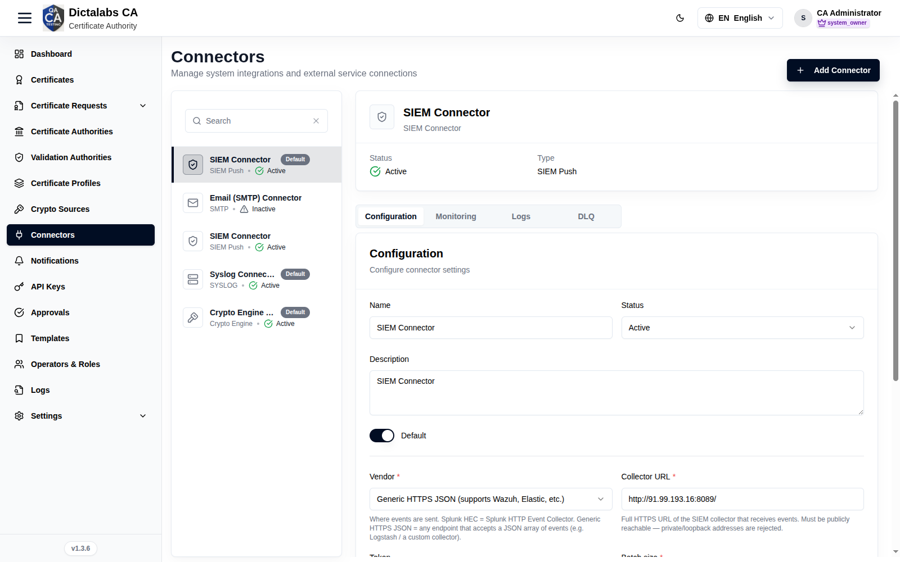
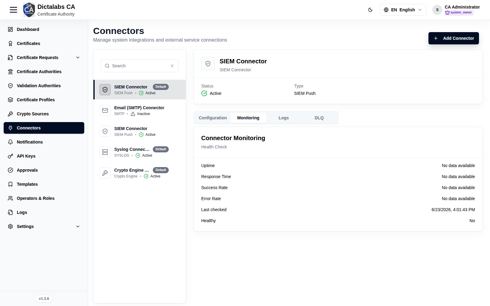
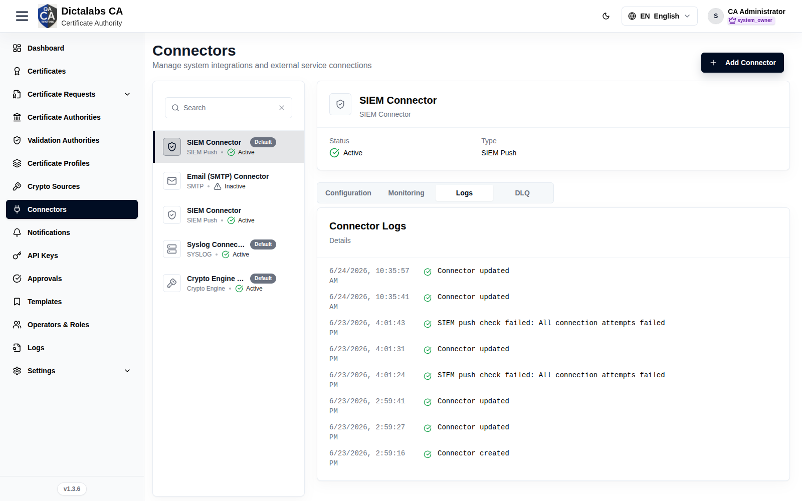
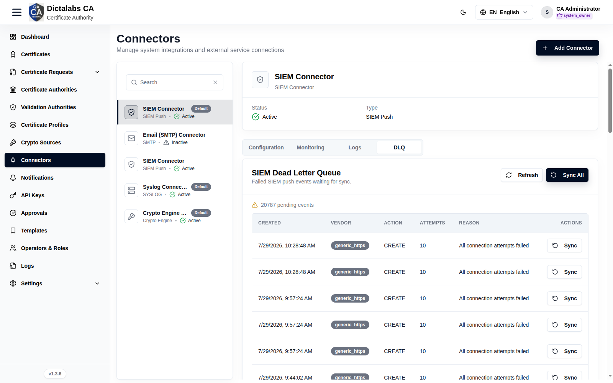
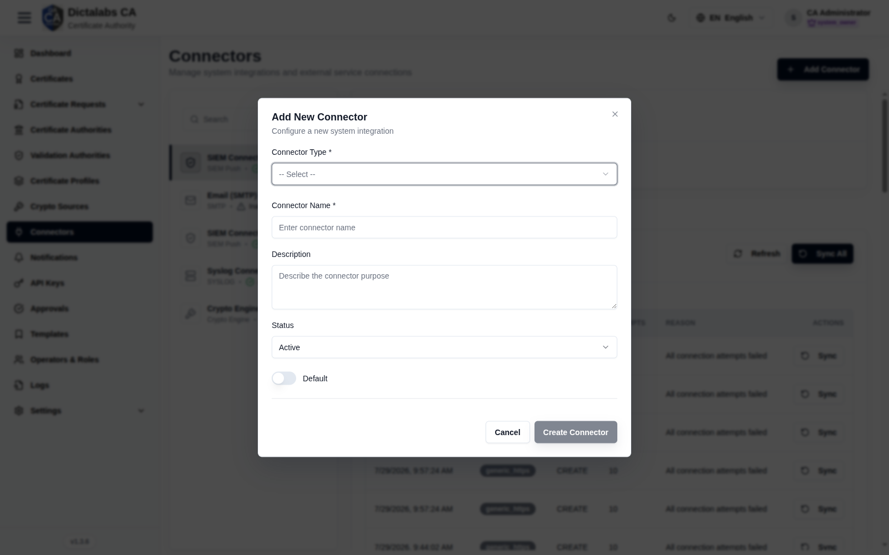

Create Connectors
Cryptographic Foundation. Prerequisite: signed in to the tenant. Create the Crypto Engine Connector here first — the next step (Crypto Sources) depends on it.
Purpose
Connectors are integrations to external services — Crypto Engine (for key storage), Email (SMTP), Syslog, and SIEM — used by crypto sources, notifications, and log export.
Navigation
Connectors
Overview

- Add Connector button.
- Left panel: connector list with type badge (Crypto Engine / SIEM / Email (SMTP) / Syslog), a Default marker, and Active/Inactive status; each has a Delete control.
- Right panel: selected connector with tabs.
Detail tabs
Selecting a connector opens its detail panel. The tabs available depend on the connector type: Configuration, Monitoring, and Logs appear for every connector, while DLQ appears only for SIEM (SIEM push) connectors.
Configuration
Edit the selected connector's identity and its type-specific connection settings, then save or test the connection. These fields are shared by every connector type and appear at the top of the tab.
| Field | What to enter | Why it matters |
|---|---|---|
| Name | A clear display name for the connector. | Identifies the connector in the list and in pickers elsewhere (crypto sources, notifications). Saving is blocked until it is filled. |
| Status | Active or Inactive. | Only Active connectors are used by the platform; set Inactive to keep the definition but stop it being used. |
| Description | Optional note on the connector's purpose or scope. | Helps other admins understand what the connector is for; not functional. |
| Default | On to mark this the default connector for its type. | The default is used when a feature needs a connector of that type and none is explicitly chosen (e.g. the default Crypto Engine or SMTP). |
Below the shared fields, the tab shows the connection settings for the connector's type (documented per type in the following subsections).
- Test connection — sends the current settings to the server to verify they work before saving. Shown for Crypto Engine, Email (SMTP), Syslog, and SIEM connectors. Stored secrets are reused, so you need not re-enter a password just to test.
- Save changes — persists the edits. Disabled until the name and all required fields are valid (and, for Syslog, at least one stream is selected).
Crypto Engine settings
Connection to the external crypto engine / HSM that stores key material.
| Field | What to enter | Why it matters |
|---|---|---|
| Engine URL | The engine endpoint or HSM library path (e.g. /usr/lib/softhsm/libsofthsm2.so). Required. |
Tells the platform where to reach the key store; wrong values break all key operations that depend on this engine. |
| Client ID | The client identifier issued by the crypto engine. Required. | Identifies this CA to the engine for authentication. |
| Client secret | The secret paired with the Client ID. Required. | Authenticates the CA to the engine; stored encrypted and shown as a masked placeholder once saved. |
Email (SMTP) settings
Outbound mail server used for certificate and system notifications.
| Field | What to enter | Why it matters |
|---|---|---|
| SMTP server | Hostname of the mail server (e.g. smtp.acme.com). Required. |
Destination host for outbound mail; must be reachable from the CA. |
| Port | SMTP port (e.g. 587 for STARTTLS, 465 for SSL/TLS, 25 for plain). Required. |
Must match the server's listening port and the chosen transport security. |
| Username | The SMTP account username. Required. | Used to authenticate to the mail server. |
| Password | The SMTP account password. Required. | Authenticates the account; stored encrypted and masked after saving. |
| Enable TLS | On to use STARTTLS for the connection. | Encrypts the SMTP session so credentials and mail are not sent in clear text. |
Syslog settings
Forwards platform logs to a remote syslog server, with selectable log streams.
| Field | What to enter | Why it matters |
|---|---|---|
| Server URL | Hostname or URL of the syslog server (e.g. https://syslog.example.com). Required. |
Destination the logs are sent to. |
| Port | Syslog port (e.g. 514). Required. |
Must match the port the syslog server listens on. |
| Transport | UDP, TCP, or TLS. Required. | Governs delivery reliability and encryption; use TLS to encrypt log traffic in transit. |
| Verify TLS certificate | On to validate the server's certificate. Shown only when Transport is TLS. | Prevents sending logs to an impostor server; recommended whenever TLS is used. |
| Facility override | Optional syslog facility number (e.g. 16). |
Overrides the default facility so logs can be routed/filtered on the syslog side. |
Log streams (select at least one, or the connector cannot be saved):
- Access log stream — request/access activity.
- Audit log stream — security-relevant audit events.
- Application log stream — general application logs.
- CRL generation stream — CRL generation events.
SIEM settings
Pushes canonical SIEM events to a Splunk HEC or a generic HTTPS JSON collector.
| Field | What to enter | Why it matters |
|---|---|---|
| Vendor | Splunk HEC, or Generic HTTPS JSON (supports Wazuh, Elastic, etc.). Required. | Selects how events are formatted and delivered to the collector. |
| Collector URL | Full HTTPS URL of the SIEM collector (e.g. https://collector.example.com:8088/services/collector). Required. |
Where events are sent; must be publicly reachable — private/loopback addresses are rejected. |
| Token | HEC token (Splunk) or bearer token (Generic HTTPS). Optional. | Sent in the Authorization header to authenticate to the collector; stored encrypted and masked after saving. |
| Batch size | Max events per request (default 500, max 1000). Required. |
Higher values mean fewer, larger requests; tune to the collector's limits. |
| Batch interval (ms) | How often a batch is flushed, in milliseconds (default 5000 = 5s). Required. |
Lower values deliver events sooner but generate more requests. |
| Timeout (seconds) | Seconds to wait for the collector before a send is treated as failed (default 10). Optional. |
Failed sends are retried with backoff; too low a value can cause needless retries. |
| Allow plain HTTP (no TLS) | Off = HTTPS required (recommended). On only for testing an http:// collector. |
Keeps event traffic encrypted in production; private/loopback addresses stay blocked either way. |
Monitoring

Read-only health snapshot for the selected connector, fetched from its health endpoint. There are no inputs on this tab.
| Reading | Meaning |
|---|---|
| Uptime | Reported availability of the connector. |
| Response time | Average response time of health checks, in milliseconds. |
| Success rate | Percentage of recent operations that succeeded. |
| Error rate | Percentage of recent operations that failed. |
| Last checked | Timestamp of the most recent health check. |
| Healthy | Whether the connector is currently considered healthy (Yes/No). |
Values show as "no data" until the connector has been exercised. Use this tab to confirm a connector is reachable and performing before relying on it.
Logs

Read-only activity log for the selected connector, newest entries first. Each row shows a timestamp, a severity icon (info, warning, error, or debug), the log message, and any structured metadata. There are no inputs on this tab; use it to troubleshoot failed operations or confirm recent activity.
DLQ

Dead-letter queue of SIEM push events that failed to reach the collector and are waiting to be re-sent. This tab appears only for SIEM connectors. The table lists each pending event's Created time, Vendor, Action, Attempts, and failure Reason. There are no inputs on this tab — only the actions below.
- Refresh — reloads the pending queue so you can watch the count change.
- Sync all — schedules a background drain that re-sends the whole queue in batches; returns immediately, so refresh to watch the pending count drop.
- Sync (per row) — re-sends a single failed event immediately.
Fields — Add New Connector dialog

| Field | Description | Required | Notes |
|---|---|---|---|
| Connector Type | Crypto Engine / SIEM / Email (SMTP) / Syslog | Yes | Selecting a type reveals its config fields |
| Connector Name | Display name | Yes | — |
| Description | Purpose | No | — |
| Status | Active / Inactive | No | Defaults to Active |
| Default | Mark as default for its type | No | Toggle |
Step-by-Step — Create the Crypto Engine connector
- Open Connectors.
- Click Add Connector.
- Choose Connector Type = Crypto Engine, name it, fill the connection settings.
- Click Create Connector.
Important Notes
- Configuration fields differ per type (SMTP host/port, syslog target, SIEM endpoint, crypto engine settings).
- Use the DLQ tab to replay failed SIEM/event pushes.